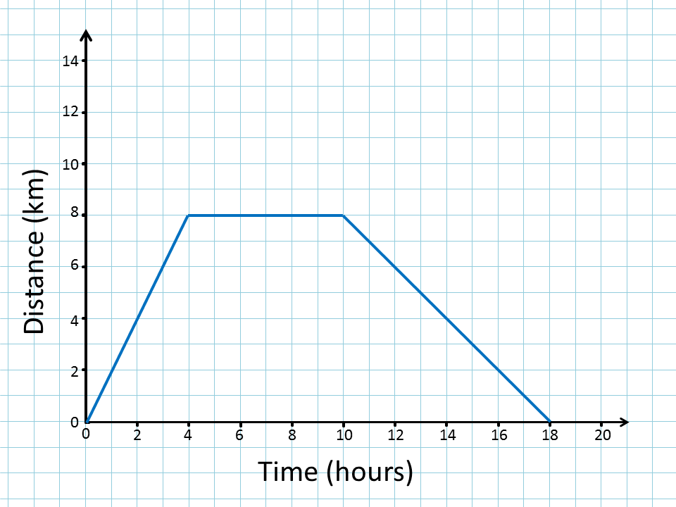

Line Graph: Distance vs Time
A line graph shows how something changes over time or distance.
The x-axis represents time (hours), and the y-axis represents the quantity being measured (distance in kilometers).
The x-axis represents time (hours), and the y-axis represents the quantity being measured (distance in kilometers).
Example:
A line graph showing the distance traveled by a car over time:
